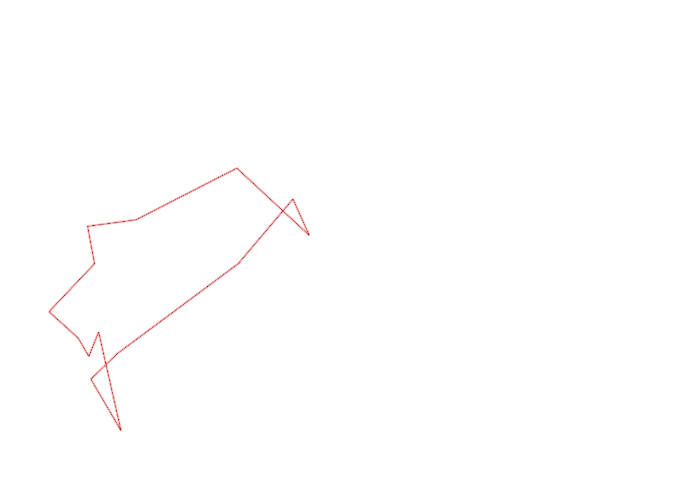
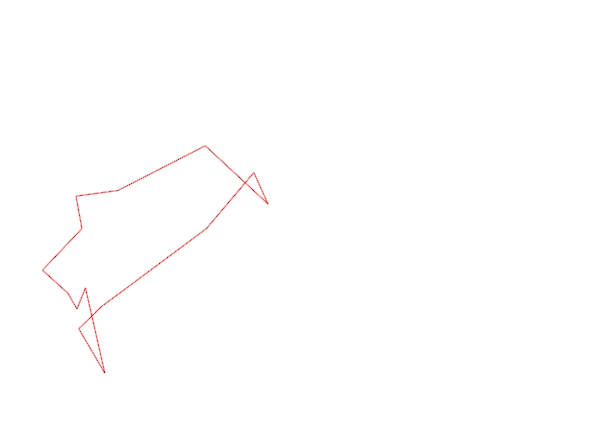

| Control |
Points |
Time Punched |
Distance |
Your Time |
Pace |
Place |
Fastest Time |
Median Time |
% Behind Fastest |
| 57 |
50 |
|
0.26 |
0:16:50 |
1:04:44 |
2 / 2 |
0:02:11 |
0:09:30 |
670% |
| 92 |
90 |
|
0.12 |
0:03:16 |
27:13 |
4 / 18 |
0:02:10 |
0:04:22 |
50% |
| 107 |
100 |
|
0.3 |
0:10:10 |
33:53 |
1 / 1 |
0:10:10 |
0:10:10 |
0% |
| 63 |
60 |
|
0.35 |
0:04:32 |
12:57 |
16 / 18 |
0:01:59 |
0:02:42 |
128% |
| 32 |
30 |
|
0.15 |
0:01:10 |
07:46 |
18 / 27 |
0:00:36 |
0:00:56 |
94% |
| 44 |
40 |
|
0.12 |
0:04:02 |
33:36 |
29 / 29 |
0:00:52 |
0:01:49 |
365% |
| 53 |
50 |
|
0.2 |
0:03:50 |
19:10 |
23 / 26 |
0:01:31 |
0:02:15 |
152% |
| 69 |
60 |
|
0.12 |
0:02:22 |
19:43 |
27 / 29 |
0:00:45 |
0:01:18 |
215% |
| 71 |
70 |
|
0.06 |
0:02:03 |
34:10 |
21 / 25 |
0:00:48 |
0:01:13 |
156% |
| 54 |
50 |
|
0.08 |
0:00:57 |
11:52 |
26 / 33 |
0:00:27 |
0:00:45 |
111% |
| 77 |
70 |
|
0.31 |
0:04:44 |
15:16 |
1 / 1 |
0:04:44 |
0:04:44 |
0% |
| 40 |
40 |
|
0.18 |
0:01:56 |
10:44 |
3 / 18 |
0:01:16 |
0:02:38 |
52% |
| 41 |
40 |
|
0.11 |
0:00:49 |
07:25 |
9 / 20 |
0:00:28 |
0:01:07 |
75% |
| Finish |
0 |
|
0.47 |
0:02:29 |
05:17 |
2 / 2 |
0:01:50 |
0:02:09 |
35% |
Total Distance Covered: 2.83km
Points Scored: 750
Late Penalty: 0
Final Score: 750
Total Time: 0hours 59minutes 10seconds
Efficiency: 265.02 points/km
 
